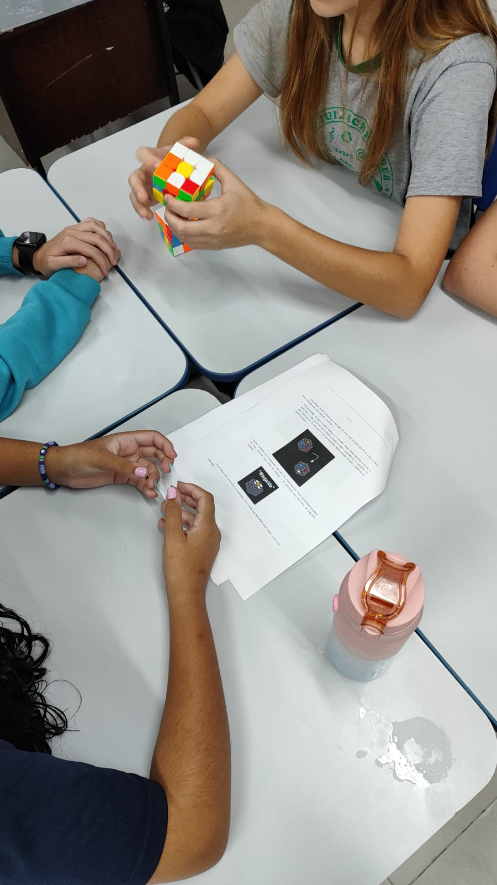
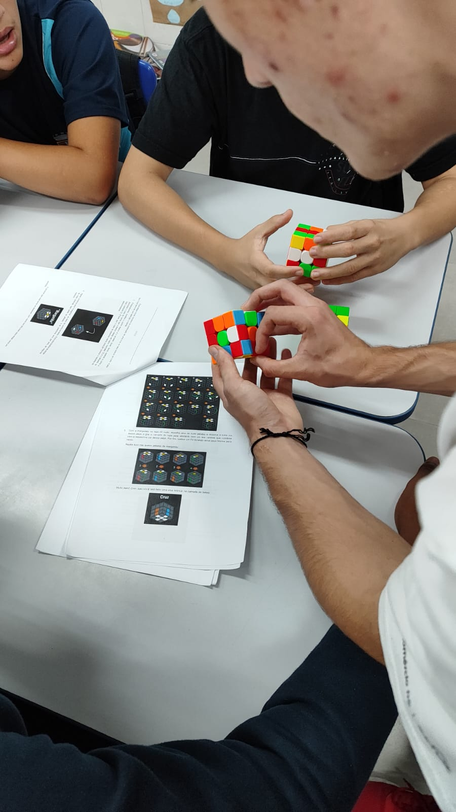

Resultados
No dia 24 de abril de 2024, com auxílio da professora e orientadora de projetos Nêmora F. Backes e voluntariado da professora de Matemática Juliana Gobbi na E.M.E.F. Luís Schroeder, foi realizada a aplicação do presente projeto com uma turma de estudantes do 9º ano. Após uma breve introdução da ideia do projeto, foi iniciada uma atividade prática em grupos de cinco, com cubos e manuais de apoio.
Explicação dos termos do cubo mágico com imagens.Quando perguntados se já tentaram resolver o cubo mágico alguma vez na vida, a grande maioria respondeu que já tentou, porém sem sucesso. Entretanto, um aluno respondeu que sabe resolver e pratica há mais ou menos dois anos.
A respeito das competições de cubo mágico, que por sua vez, possuem diversas categorias além do 3x3, foi constado que a existência delas era de conhecimento dos alunos. Porém, como esperado, nenhum havia participado de uma competição em si.
Foi perguntado aos estudantes se eles sabiam as possíveis habilidades que a aplicação do cubo mágico pode nos ajudar a desenvolver e tivemos respostas como: coordenação motora, pensamento cognitivo e raciocínio lógico. Nesse viés, foram questionados o porquê da utilização do cubo mágico em sala de aula e dessa vez, não souberam o que responder, mas constaram que existe a prática de um jogo de raciocínio na escola, o xadrez.
 Alunos aprendendo a montar o cubo mágico.Durante a montagem dos cubos, foi observado no início dificuldade com a etapa da margarida. Porém, ao longo da prática notou-se certa evolução de alguns alunos de três dos seis grupos em que a turma foi dividida. Estes que estavam avançando estavam engajados com os materiais de apoio físicos e usufruíam também do slide com as notações do cubo 3x3. Entretanto, em virtude de horário, o máximo que conseguimos seguir com a montagem foi na etapa do F2L, mais especificamente na camada do meio.
 Alunos recebendo auxílio na montagem do cubo mágico.